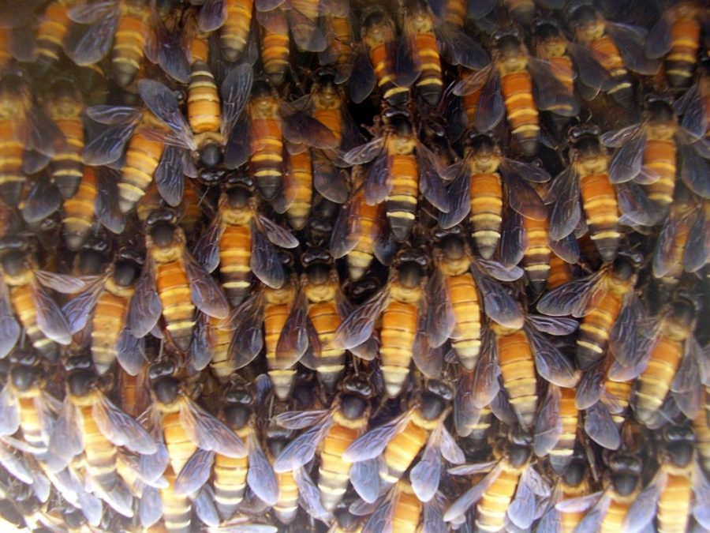

रॉक बीGiant Honey Bee
Apis dorsata · Apidae · INS-0014

- Scientific name
- Apis dorsata Fabricius, 1793
- Family
- Apidae
- Hindi
- रॉक बी / पहाड़ी मधुमक्खी
- Status here
- native
- IUCN
- not evaluated
When to look कब देखें
Present all year.
रॉक बी / पहाड़ी मधुमक्खी / Giant Honey Bee
Apis dorsata Fabricius, 1793 — Apidae
पहाड़ी मधुमक्खी — पूर्वी उत्तर प्रदेश के ग्रामीण और अर्ध-शहरी दोनों इलाकों में पाई जाने वाली भारत की सबसे बड़ी और आक्रामक जंगली मधुमक्खी। यह ऊंचे पेड़ों की शाखाओं, पानी की टंकियों, पुलों और ऊंची ऐतिहासिक इमारतों पर एक ही बड़े आकार का खुला छत्ता (सिंगल-कॉम्ब) लटकाने के लिए प्रसिद्ध है। इसे स्थानीय स्तर पर 'भंभोरी' या 'धमन' भी कहा जाता है। यह फसलों (जैसे सरसों और अरहर) के परागण में सबसे महत्वपूर्ण भूमिका बनाती है और प्रचुर मात्रा में जंगली शहद प्रदान करती है, हालांकि इसके छत्ते के साथ छेड़छाड़ करने पर यह झुंड में हमला करने के लिए जानी जाती है।
Quick Identification त्वरित पहचान
| Feature | Description |
|---|---|
| Form | Large, slender bee with a long, dark abdomen; significantly larger than other honey bees |
| Coloration | Head and thorax are blackish-brown; abdominal segments are yellowish-orange at the base and black at the tip |
| Wings | Long, smoky or slightly dusky wings, held flat over the back when resting |
| Nesting | Builds a single, massive, open comb (up to 1.5 meters wide) hanging vertically from high places |
| Defense | Highly defensive; performs "shimmering" movements across the comb to ward off predators |
| Behavior | Excellent long-distance flyer; exhibits crepuscular foraging (active during dusk and moonlit nights) |
Field tip: Look for a very large honey bee (nearly 2 cm long) with a yellow-and-black striped abdomen and dark wings. They are easily identified by their massive, single-comb nests hanging under large tree branches (like Banyan or Mango) or high building ledges.
Morphology आकारिकी
| Measurement | Range |
|---|---|
| Body length | 17–20 mm |
| Forewing length | 12–15 mm |
Body structure: The body is elongated, covered in fine hairs. The head is broad, with large compound eyes and three simple ocelli. The thorax is robust, dark brown, and packed with flight muscles.
Abdomen: The abdomen is band-patterned: the first 2–3 anterior segments are bright honey-yellow or orange, while the posterior segments are deep black. The female workers are equipped with a smooth, barbless sting used for defense.
Wings: The forewings are long, translucent with a dark brownish tint (smoky), and have a complex venation system typical of the family Apidae.
Legs: The hind legs are specialized for pollen collection. The tibia and first tarsal segment are widened and lined with stiff hairs, forming a "pollen basket" (corbicula) to transport pollen back to the nest.
Ecological Role पारिस्थितिक भूमिका
Dominant pollinator. Apis dorsata is one of the most important insect pollinators in South Asian tropical forests and agricultural ecosystems. Because of their large size, strong flight capabilities, and ability to forage at low light levels (crepuscular and nocturnal), they pollinate a vast range of canopy trees, wild forest flowers, and agricultural crops.
Honey production. Unlike other domestic honey bees, Apis dorsata cannot be easily kept in boxes (apiculture) because of their open nesting habit and migratory nature. They produce massive quantities of honey in their nests, which is harvested by traditional honey collectors.
Nesting associations. Their large, open combs provide a micro-habitat for several symbiotic and opportunistic insects, such as wax moths and minor beetles.
Life Cycle / Phenology जीवन चक्र
- Social structure: Eusocial insects, living in colonies containing a single queen, thousands of female workers, and hundreds of male drones.
- Nest founding: A swarm of bees led by a queen chooses a high, open site and builds a large comb from wax secreted by the workers.
- Brood rearing: The queen lays eggs in hex-shaped cells. Eggs hatch into larvae, which are fed nurse bees. After pupation, worker bees emerge in about 20 days.
- Seasonal migration: They are migratory bees. As the dry season approaches and local flowers decline (May-June), the entire colony absconds and migrates to forested hills or wetter regions. They return to the Gangetic plains in October-November when the mustard flowering season begins.
Host Plants or Prey आहार
Foraging sources:
- Agricultural crops: Mustard (Brassica spp.), pigeon pea (arher), sunflower, cucurbits, and eucalyptus trees.
- Forest trees: Neem (FLR-0009), Banyan (Ficus benghalensis), Jamun, and Mahua.
- Weeds: Calotropis (FLR-0002) and wild grasses.
Predators / Natural Enemies शत्रु
- Birds — Green Bee-eaters (BRD-0005), Black Drongos, and Crested Honey Buzzards.
- Mammals — Sloth bears (which raid hives for honey and larvae) and monkeys.
- Insects — Vespa hornets (which capture foraging workers at hive entrances) and predatory wasps.
- Humans — Honey hunters who smoke out hives.
Agricultural / Human Relevance कृषि प्रासंगिकता
Pollination services. In eastern UP, their role in pollinating oilseed mustard crops during the winter season is unparalleled, directly increasing crop yields for local farmers.
Honey hunting economy. Traditional forest-dwelling communities collect wild honey from Apis dorsata hives. This honey is prized in local markets for its medicinal properties and wild flavor.
Defense and sting hazard. They are notoriously aggressive. If a hive is disturbed by stones, smoke, or birds, workers launch a coordinated attack, chasing the intruder for hundreds of meters. A multiple-sting event can be medically dangerous for humans and livestock.
Expected Locally स्थानीय रूप से अपेक्षित
Not a field record. Written from published accounts for eastern Uttar Pradesh. No confirmed local sighting yet — if you have seen it, that is what the atlas needs.
अभी तक स्थानीय पुष्टि नहीं। यह विवरण प्रकाशित स्रोतों से है, किसी अवलोकन से नहीं।
Commonly found throughout Basti district. Hives are frequently seen hanging under large branches of old Peepal and Banyan trees, or under the ceilings of high water tanks and school corridors. In late winter, they are seen in thousands hovering over mustard fields. Local residents are careful not to disturb nests in residential areas, often hiring professional honey harvesters to remove hives when they pose a safety threat.
Distribution वितरण
Global range: Distributed across Southern and Southeastern Asia, from Pakistan and India east to southern China and Indonesia.
In India: Found throughout the plains and lowlands, up to 1,500 meters in the hills.
In Uttar Pradesh: Abundant resident and seasonal migrant across all districts.
In Basti district / eastern UP: Widespread across agricultural and rural areas.
Range notes: No significant range changes documented.
Research Questions शोध प्रश्न
Anyone can investigate these | कोई भी इन प्रश्नों की जाँच कर सकता है
- Which agricultural crop in your village is most frequently visited by Apis dorsata compared to the smaller Apis cerana? / आपके गाँव में छोटी मधुमक्खी (एपिस सेराना) की तुलना में पहाड़ी मधुमक्खी (एपिस डोरसाटा) किस फसल पर सबसे अधिक जाती है? — Count visits of both species on 10 plants of mustard or pigeon pea over 10 minutes.
- What time of the evening does Apis dorsata cease foraging in Basti during the hot pre-monsoon months? / बस्ती में गर्म मानसून-पूर्व महीनों के दौरान पहाड़ी मधुमक्खी शाम को किस समय अपना चारा खोजना बंद कर देती है? — Observe flowers near a nest at dusk.
- What is the average height of Apis dorsata nests from the ground in your local area, and do they prefer trees or buildings? / आपके स्थानीय क्षेत्र में पहाड़ी मधुमक्खियों के छत्ते जमीन से औसत कितनी ऊंचाई पर होते हैं, और क्या वे पेड़ों या इमारतों को पसंद करते हैं? — Measure and log heights and nesting substrates of 10 hives.
- How does the "shimmering" defense wave of Apis dorsata respond to a flying bird near the comb? — Describe the wave movement and duration when a bird flies within 2 meters of the nest.
- On what dates do the colonies of Apis dorsata disappear from their nesting sites in Basti, and when do they return? / बस्ती में पहाड़ी मधुमक्खियों की कॉलोनियां अपने घोंसले के स्थानों से किस तारीख को गायब होती हैं, और वे कब वापस आती हैं? — Keep a log of colony presence/absence at a specific nesting tree.
Similar Species मिलती-जुलती प्रजातियाँ
| Species | How to tell apart | हिंदी |
|---|---|---|
| Indian Honey Bee (Apis cerana) | Much smaller (10–12 mm); nests in cavities (hollow trees, boxes); less aggressive; abdomen is more uniformly striped | भारतीय मधुमक्खी — छोटा आकार, कोटरों में घोंसला |
| Dwarf Honey Bee (Apis florea) | Very small (7–10 mm); builds a small single comb in low bushes; abdomen has red-orange front segments | छोटी मधुमक्खी — अत्यंत छोटा आकार, कम ऊँचाई पर छत्ता |
| Asian Giant Hornet (Vespa soror / other hornets) | Larger and thicker; black and orange bands; does not gather pollen; aggressive predator of honey bees | पीला ततैया / भौंरा — बड़ा आकार, मांसाहारी |
Field rule: Large body size (17–20 mm), dark smoky wings, yellow-and-black striped abdomen, nesting in huge, single, open combs hanging from high structures, identifies Apis dorsata.
Taxonomy & Classification वर्गीकरण
Original description. Johan Christian Fabricius described the species as Apis dorsata in 1793 in his work Entomologia Systematica (Vol. 2, p. 328). The type locality is India. The genus name Apis is Latin for bee. The specific epithet dorsata is derived from the Latin dorsum (back), referring to its prominent dorsal segments.
Subspecies. Several geographic subspecies exist, with the nominate form in India:
- Apis dorsata dorsata Fabricius, 1793 — UP subspecies; common throughout continental South Asia.
Family and order placement. Placed in the order Hymenoptera, suborder Apocrita, superfamily Apoidea, family Apidae (honey bees, bumblebees, and stingless bees), subfamily Apinae, tribe Apini.
Phylogenetic notes. Apis dorsata represents a basal branch of the honey bee genus Apis, belonging to the subgenus Megapis. It is closely related to the giant cliff bee Apis laboriosa of the Himalayas.
IUCN status rationale. Not assessed by the IUCN Red List (Not Evaluated). However, they are highly sensitive to habitat loss, urban tree felling, and pesticide spraying in agricultural fields.
Photo Gallery फोटो गैलरी
References संदर्भ
- Fabricius, J.C. (1793). Entomologia systematica emendata et aucta. Tom. II. Christ. Gottl. Proft, Hafniae, p. 328.
- Ruttner, F. (1988). Biogeography and Taxonomy of Honeybees. Springer-Verlag, Berlin.
- Smith, F. (1865). On the species and varieties of the honey-bees of the Eastern Archipelago. Journal of the Proceedings of the Linnean Society. Zoology, 8(30), 137–148.
- Oldroyd, B.P. & Wongsiri, S. (2006). Asian Honey Bees: Biology, Conservation, and Human Interactions. Harvard University Press, Cambridge.
- GBIF Occurrence Data — Apis dorsata, India (2010–2025).
- Zoological Survey of India (ZSI) — Hymenopteran Fauna of Uttar Pradesh.
Source file: species/fauna/insects/giant_honey_bee.md